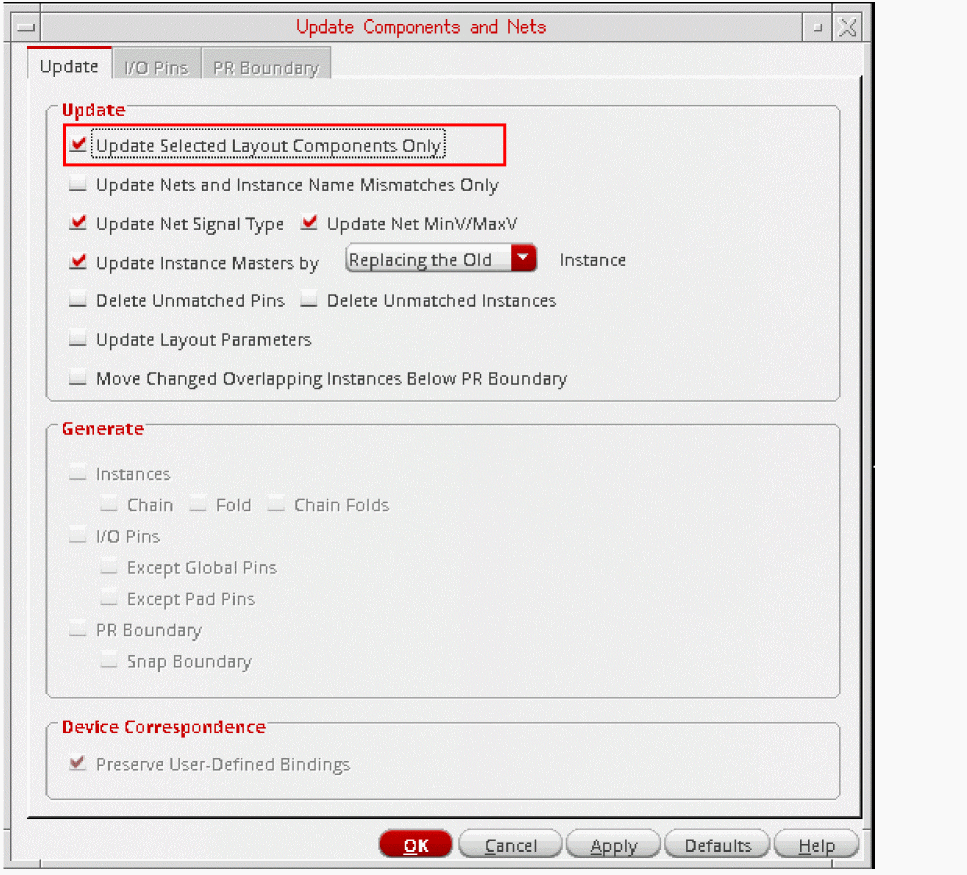

Updating Selected Layout Components
To update only selected instances and pins:
- Select the Update of the Update Components and Nets form.
-
In the Update group box, select the Update Selected Layout Components Only check box.
The options to generate missing components, and consequently the I/O Pins and PR Boundary tabs, are turned off and grayed out.
Preserve User-Defined Bindings is switched on and grayed out. - To update only the connectivity information for the selected instances and pins, select the Update Nets and Instance Name Mismatches Only check box and proceed to step 9. If any pins have got swapped due to a schematic ECO, run the Update with Update Nets and Instance Name Mismatches Only selected to ensure that the original pin positions are retained in the layout. To reflect the pin swaps in the layout, run the Update with Update Nets and Instance Name Mismatches Only deselected.
- To update the signal types assigned to nets from the schematic view and the min and max voltages on the schematic nets, select the Update Net Signal Type check box.
-
To update instances with incorrect masters, select the Update Instance Masters check box and specify how an incorrect instance is handled:
- By default, it is removed and replaced by an instance of the correct master in the same location.
-
When set to Creating a New, the command puts a marker on the instance with the incorrect master and renames it name
_old. It then creates a new instance with the correct master and places it below the PR boundary.
Because you are creating a new instance, you can optionally enable Chain, Fold, or Chain Folds in this mode. If thedisableFoldingenvironment variable is set and the folding threshold for the component type is set to0, folding is disabled.
- To delete layout pins and instances that are not present in the schematic, select the Delete Unmatched Pins and Delete Unmatched Instances check boxes. When you delete unmatched pins, redundant nets and terminals are also deleted.
- To update parameters and parameter values in the layout instances to match those on their schematic counterparts, select the Update Layout Parameters check box.
- To automatically place instances below the PR boundary if they overlap other instances during the update, select the Move Changed Overlapping Instances Below PR Boundary check box. The overlapping instances are the ones that have changed in size, and if placed at their original location, may overlap other unchanged instances.
- Click OK to update the selected instances and pins.
Related Topics
Update Components and Nets Form
Updating Nets and Instance Name Mismatches Only
Return to top